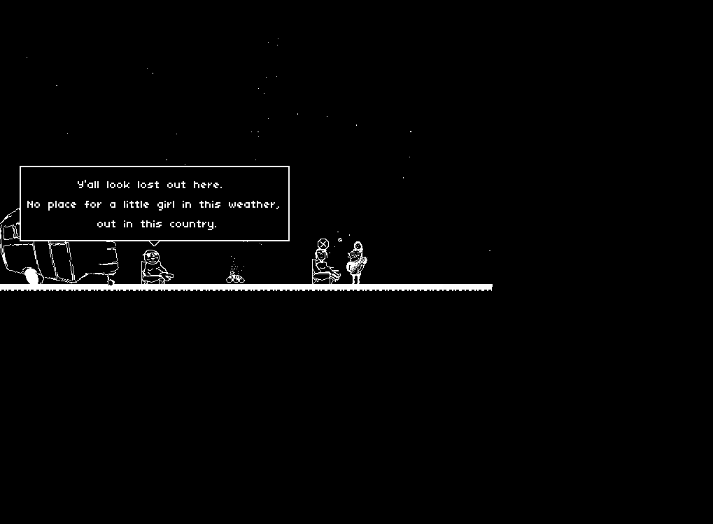
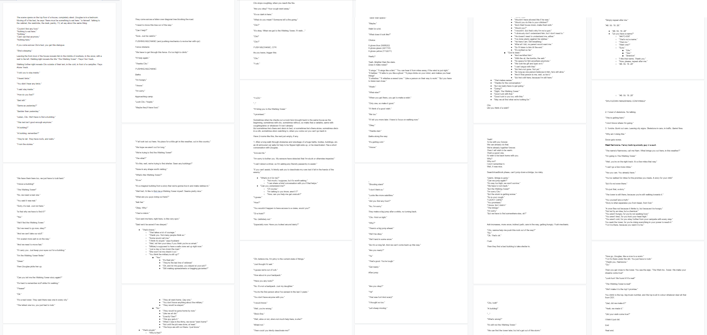
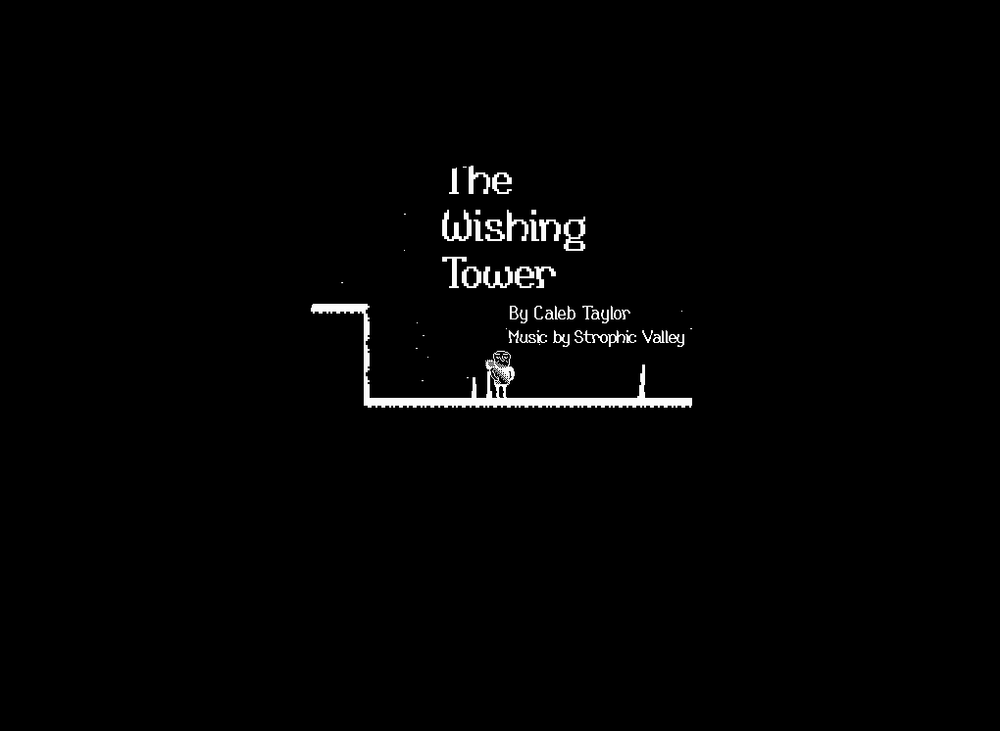
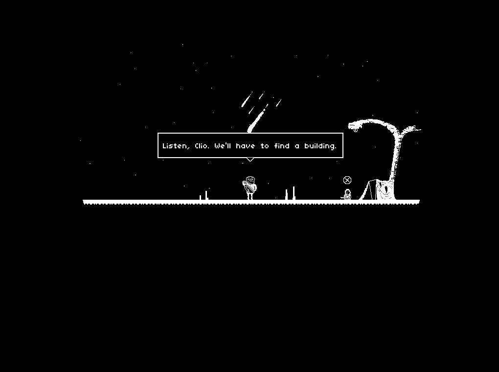
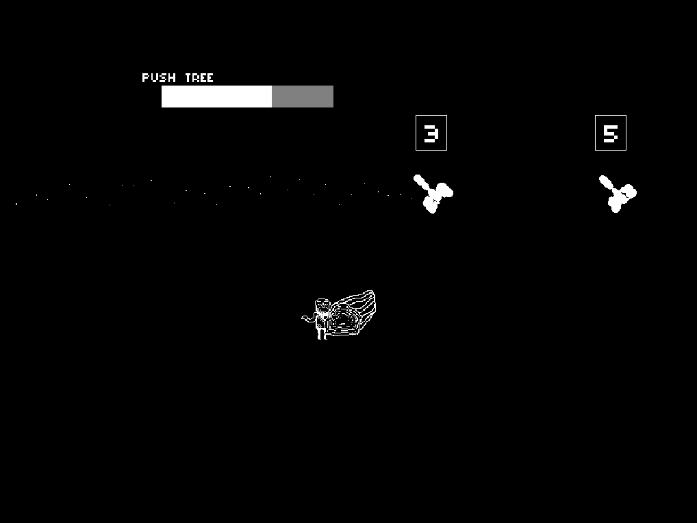
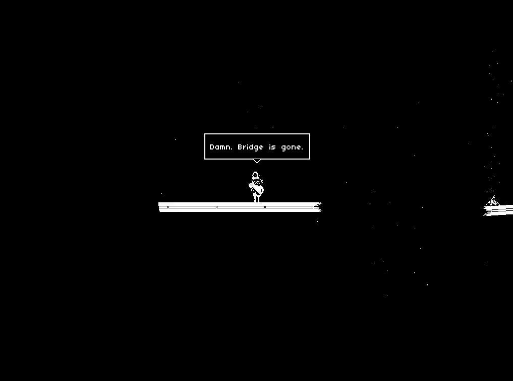

Wrote the game's script (13+ pages of dialogue).
Designed the narrative system and branching dialogue.
Developed a rhythm-based fight mechanic.
Documented the dialogue system's functionality.
Illustrated and coded every aspect of the game.
The Wishing Tower - 2021The Wishing Tower follows Douglas and his daughter Clio through a perilous, ashy winter in search of a mythical Wishing Tower. Play it for free!
The Wishing Tower was an experiment in game narrative design and branching dialogue, which I made a custom dialogue system for. During the project, I handled all of the art, programming, and writing. I collaborated with Strophic Valley who provided The Wishing Tower with an amazing custom soundtrack. The brunt of The Wishing Tower's development took 3 months. You can play The Wishing Tower here.
I first drafted the story of The Wishing Tower back in 2019. It was supposed to be a longer experience with a focus on world building and dialogue-heavy prose, but as time went on, I elected to shorten the narrative and test an idea I had for a custom dialogue system. While a bit expository at times, and rough around certain edges, I'm proud of the shortened story I was able to pull off in order to finally ship the game.
The game features over 13 pages of dialogue. I designed 3 short conversations with branching dialogue and unique endings. The end result is a short but sweet 30 minute game about a father, his daughter, and the stories they pick up along the way as they seek refuge in a post-war wasteland. You can read more about my narrative system's design here.
The 13+ pages of dialogue, with branches and end behavior throughout.
I illustrated close to 100 individual assets for The Wishing Tower (not counting animation frames) by hand, almost exclusively in the style of 1-bit pixel art. I experimented with GameMaker Studio's "application surface" to create a pseudo 2D lighting effect where I carve holes of light out of an opaque background.
I developed a dynamic, real-time weather system which generates precipitation which falls around the player, and wind that pushes both the player and the weather particles around. The player will notice walking into a gust of wind makes it harder to walk, and will blow more ash in their direction.
The Wishing Tower turned out to be a largely relaxing and laid back experience, punctuated by the occasional "encounter" featuring a rhythm game inspired quick-time event system. I designed this system in such a way to be as simple to new players as possible, but still provide moments of excitement and action without taking too much away from the game's mood.
The player will need to match the numbers/shapes together before they collide, or the player will "miss". A combo is applied for a successful streak of "hits". This system was used to uniformly handle gameplay like moving rocks and cutting fences.
Especially with a personal project, I found that I had to scale back my ideas to have any chance at finishing. Working on a project almost completely on my own was fun, but time consuming and complicated. I should have focused more on having fun before trying to ship a fully fledged game right out of the box.
For more narrative focused games like The Wishing Tower was intended to be, I would dedicate a lot more time in the beginning towards the story. All other aspects of a game like this are secondary to the story.
